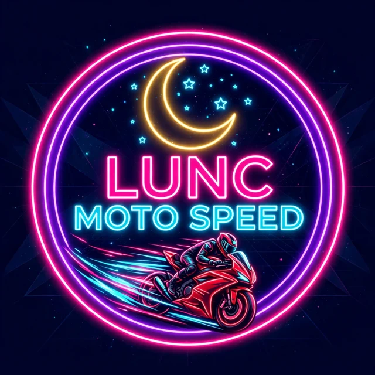

🕹️ Joystick: push UP = gas, DOWN = brake, LEFT / RIGHT = steer ⚡ HOLD the ⚡ NITROUS button to boost — the longer you hold, the faster you go — nitrous never runs out 🏍️ HOLD the WHEELIE button to lift the front wheel — riding a wheelie earns bonus points, and it stacks with nitrous! 💥 Hit a car head-on and you WIPE OUT — rider over the bars, run over! Light grazes just bounce off. ♾️ INFINITY SPEED: the longer you go, the faster it gets — there is no top speed and no clock. The run ends when you tap ⏹ END RUN — or when you wipe out — 🏆 score = distance + near-miss bonuses. Faster passes pay more! 🏁 TOP SPEEDS board: the fastest run wins — who gets the fastest run?